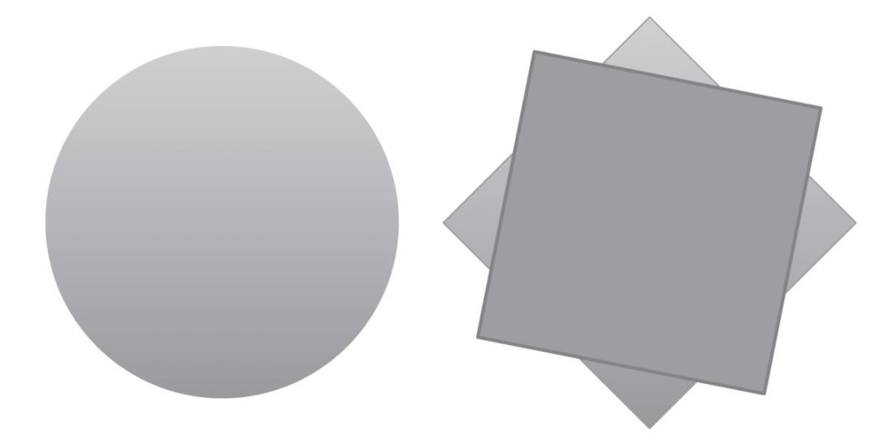
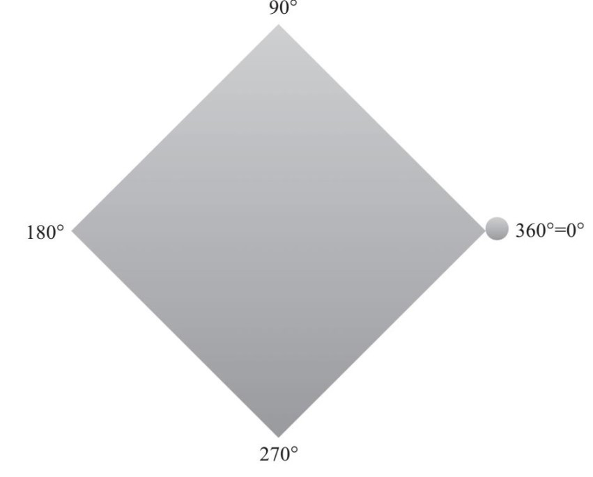
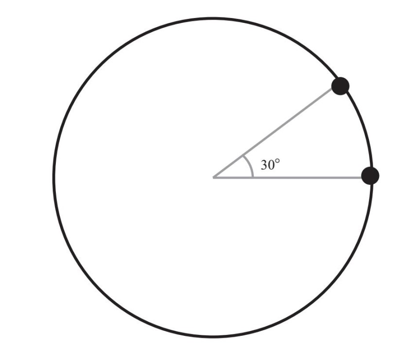
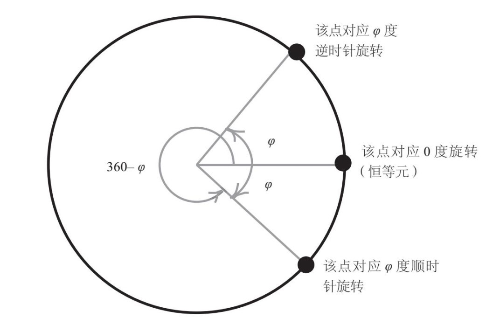
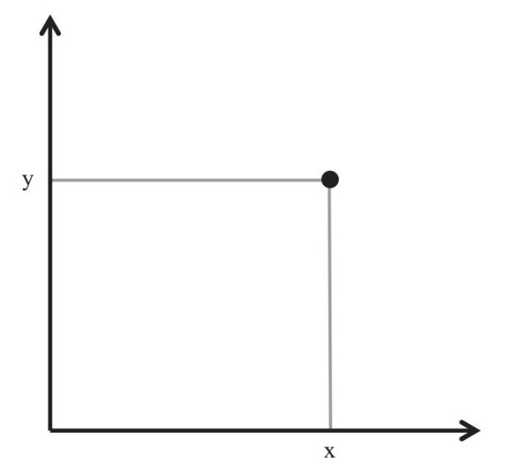
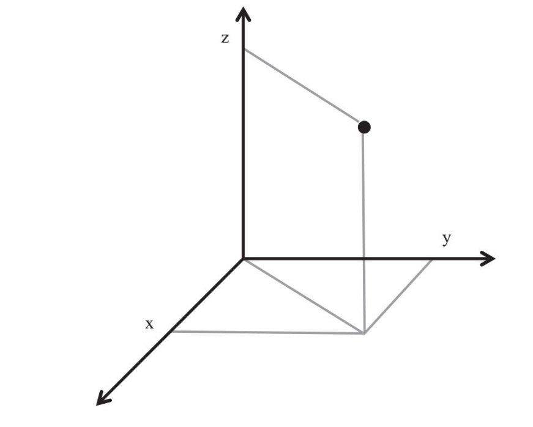

大多数人认为，数学研究的就是数字，从事数学研究的人整天都在处理一些大数字，甚至是一些超级大的数字，而且所有数字都会有稀奇古怪的名称。至少在叶夫根尼耶维奇向我介绍现代数学的那些概念和想法之前，我也是这样以为的。事实上，在那些概念与想法中，就藏有一把帮助人们打开夸克理论大门的钥匙——对称（symmetry）概念。
图片来源：K·G·利布雷希特（K. G. Libbrecht）
对称是什么？我们每个人对这个概念都有一个直观的理解，看到某个图形就可以知道它是否对称。当我要求人们给出一个对称物体的例子时，他们总以蝴蝶、雪花为例，或者认为人体就是对称的。
但是，当我问他们在什么情况下我们会说一个物体是对称的时候，他们却语焉不详。
对于这个问题，叶夫根尼耶维奇是这样给我解释的。“让我们来看看这张圆桌，还有这张方桌，”他指着办公室里的两张桌子问道，“哪张桌子更加对称呢？”
“当然是圆桌，这不是显而易见的吗？”
“为什么？数学研究可不能因为答案‘显而易见’就视其为正确答案啊，你必须使用推理的方法。通过推理，你常常会惊讶地发现，最显而易见的答案竟然是错误的。”
看到我一脸迷惑的样子，叶夫根尼耶维奇给了我一点儿提示：“如果说圆桌更加对称，那是因为圆桌具有哪些属性呢？”
我思索了一会儿，然后回答道：“对称的物体，即使我们转动它，它的形状和位置也会保持不变。我想对称性应该与这个特点有关系。”
叶夫根尼耶维奇点了点头。
“的确如此。我们来研究一下，在发生哪些转动时，这两张桌子会保持形状与位置不变。”他说，“对于圆桌而言……”
我打断了他的话，说道：“围绕中心点，无论怎么旋转，桌子都会处于其先前所在的位置。但是，如果我们随意旋转方桌，一般都会改变桌子的位置。只有当方桌旋转90度或者90度的倍数时，其位置才不会变。”
“说得对极了！如果你离开我的办公室一会儿，我转动圆桌，无论我怎么转，你回来后都不会发现它有什么异样。但如果转动了方桌，你就会发现它有变化，除非我让方桌转动90度、180度或者270度。”

圆桌转动任意角度，其位置都不会发生改变，但是转动方桌时，如果转动的角度不是90度的倍数，方桌的位置就会发生变化（本图是表现两张桌子转动情况的俯视图）
他接着说道：“这样的变化叫作对称操作。方桌只有4种对称操作，而圆桌的对称操作数量却要多得多——事实上，圆桌有无数种对称操作。因此，我们会说圆桌更加对称。”
这样的解释很有道理。
“这些都是非常直接的观察，”叶夫根尼耶维奇接着说，“即使你从事的工作不是数学研究，你也会知道这些。但是，如果你是从事数学研究的专业人士，你就会问另一个问题：对于给定物体的对称操作都有哪些？”
我们来看看方桌的情况。方桌的对称操作有4种：围绕桌子的中心点，按逆时针方向旋转90度、180度、270度或360度。数学研究者认为，方桌的对称集合中包含4个元素，分别对应90度、180度、270度和360度的角。我们把它们标记为桌子的四角，每次旋转都会把一个固定的桌角（下页图中带有球形标记的桌角）转动到另一个桌角所在的位置。
在这4种旋转操作中，有一种比较特别。把方桌旋转360度与旋转0度的效果一样，也就是说，旋转360度跟没有旋转一样。的确，桌子上的每一个点的位置，都与其旋转之前的位置相同。这样的旋转是一种特殊的对称操作，对物体本身没有促成任何实质性的变化，我们把它称作“恒等对称”（identical symmetry）或“恒等元”（identity）。

注意，当物体旋转角度超过360度时，其效果会与旋转角度为0度至360度之间的某次操作效果相同。例如，旋转450度的效果与旋转90度的效果相同，因为450=360+90。因此，我们只考虑0度至360度之间的旋转操作。
下面的观察非常重要：如果我们依次完成{90度，180度，270度，360度}集合中的两种旋转操作，其效果与该集合中的另外一种旋转的效果相同。我们把后一种对称操作称作前两种对称操作的结合。
显而易见的是，这两种对称都能保证桌子位置不发生变化。因此，它们结合后也会保证桌子位置不发生变化，所以，这构成了一种对称操作。例如，如果我们把桌子旋转90度，再旋转180度，最终结果则是旋转270度。
我们看看桌子经过这些对称操作后会产生什么结果。按逆时针方向旋转90度之后，右侧桌角（第16页图中有球形标记的桌角）会移动到上方桌角的位置。
接下来，我们再把桌子转动180度，上方桌角就会移动到下方桌角所在的位置。最终结果是，最初的右侧桌角移动到下方桌角所在的位置，这与将桌子逆时针旋转270度产生的结果一样。
再举一例：
90度+270度=0度
先旋转90度，再同方向旋转270度，则一共旋转了360度。上文讨论过，旋转360度的结果与旋转0度的结果一样，这就叫作“恒等对称操作”。
换句话说，第二次的270度旋转消除了第一次的90度旋转的结果。这其实是一种重要特性：所有对称操作的结果都可以被消除。也就是说，对于任意对称操作S，总是存在另一个对称操作S'，两者组合后形成恒等对称操作。因此，S'被称作S的“反演对称”。我们发现，270度旋转是90度旋转的反演。同理，180度旋转的反演操作是其本身。
现在，我们可以看出，看似非常简单的方桌对称操作集合——{90度，180度，270度，360度}，其内部结构特点，即集合中各元素相互作用的规则，实际上比较复杂。
首先，我们可以将任意两种对称操作结合（即依次完成这两种操作）。
其次，存在一种特殊的对称操作，即恒等对称操作。在我们这个例子中，0度旋转就是恒等对称操作。如果我们把0度旋转与任意对称操作相结合，得到的仍然是该对称操作。例如：
90度+ 0度=90度，180度+ 0度=180度，…
第三，对于任意对称S，总是存在反演对称S'，两者结合形成恒等对称操作。
现在，好戏就要上演了！具备上述三个结构特点的对称操作集合，构成了一个被数学研究人员称为“群”的例子。
任意物体的对称操作都可以构成群，而且一般由更多的元素（甚至可能由无数个元素）构成。
下面我们结合圆桌来讨论这个问题。现在我们已经有了一些经验，可以清楚地知道圆桌的所有对称操作构成的集合，就是所有可能的角度（而不仅仅是90度的倍数）旋转构成的集合，我们以圆上所有点构成的集合来形象地表示该集合。
圆上每个点都分别对应0度至360度之间的一个角度，圆上还有一个对应0度旋转的点，它比较特殊，需要引起注意。下图中，代表30度旋转的点与代表0度旋转的点一起构成了一个30度的角。

不过，我们不能把该圆上的各点看成圆桌上的点。圆上的点表示的是圆桌特定的一种旋转操作。注意：我们可以在这个圆上先选定一个点，即与0度旋转对应的点，而圆桌上并不存在这样的点。
接下来，我们来证明圆上各点是否符合上述三个结构特点。
首先，φ1度与φ2度旋转的结合等同于（φ1+φ2）度旋转。如果φ1+φ2的值大于360度，从其和中减去360度即可。在数学上，这种算法被称作“模360度加法”（addition modulo 360）。例如，如果φ1=195度，φ2250度，那么两个度数之和为445度，而且445度旋转的结果与85度旋转的结果相同。因此，在圆桌旋转群中，我们有
195度+250度=85度
其次，圆上有一个特殊的点，对应0度旋转。该点是该群的恒等元。
最后，φ度逆时针旋转的反演操作就是逆时针（360–φ）度旋转或φ度顺时针旋转（见下图）。

至此，我们已经描述了圆桌旋转群的情况，我们把它称为“循环群”。与包含4个元素的方桌对称群不同，圆桌循环群包含无数个元素，因为在0度和360度之间有无数种角度。
以上是我们从纯理论角度对对称的直观理解，也就是说，他们把对称转化成了一个数学概念。首先，我们假设对物体的对称操作就是保持物体本身及其属性不变的一个变化过程，然后我们又完成了一个非常关键的步骤：把研究的重点从物体本身转移到所有由对称操作构成的集合上。对于方桌而言，该集合包含4个元素（90度倍数的旋转操作）；而对于圆桌而言，该集合是无穷集合（包含圆上所有的点）。最后，我们描述了该对称操作集合始终具备的三个结构特点：任意两种对称操作可以结合成为另一种对称操作；存在恒等对称操作；对于每一种对称操作，都存在反演操作。通过以上步骤，我们得到了“群”这个数学概念。
对称操作群是一个抽象概念，它与我们开始时介绍的具体对象（比如方桌、圆桌）差异甚大。我们无法触碰也无法抬起桌子的对称操作集合，但我们却可以触碰也可以抬起桌子。我们可以通过思考这个抽象概念，推断出其包含的元素，并开展研究与讨论活动。这个抽象集合中的所有元素都有具体含义：代表某个具体对象的某种变化，即对称操作。
数学研究的对象就是诸如此类的抽象对象与概念
经验告诉我们，对称是大自然运转的基本法则。例如，雪花总是呈现为完美的六边形，这是因为六边形是最低能态，水分子在结晶时一定会形成六边形。雪花的对称操作群由60度倍数的旋转操作组成，即60度、120度、180度、240度、300度和360度（与0度旋转效果相同）的旋转。此外，我们还可以沿着与雪花任意顶角对应的轴“翻转”雪花。这样的旋转与翻转都不会改变雪花的形状与位置，因此它们都是雪花的对称操作[1]。
再比如蝴蝶。上下翻转蝴蝶，会使蝴蝶的头部朝下。而且，由于蝴蝶只有身体的一侧有腿，因此，严格地说，翻转不构成蝴蝶的对称操作。我们在把蝴蝶的形状当作对称图形考虑时，是将其假设成理想化的形状，把蝴蝶身体的前后部位看成完全相同的形状（真实情况并非如此）。在这种状态下翻转蝴蝶，使蝴蝶左、右翅膀位置对调，就会构成对称操作。（或者，我们也可以想象在不把蝴蝶前后翻转的情况下对调其身体两侧的翅膀，结果相同。）
这就引出了一个很重要的问题：自然界中有很多物体只是近似“对称”的。在真实世界中，桌子并非标准的圆形或方形，蝴蝶身体的前后部位不对称，人体也不是完全对称的。但是，即便如此，我们也可以对这些物体进行抽象思考，将其假设成理想化的形状，即模型——把桌子看成规整的圆形，或者把蝴蝶看成身体前后部位没有区别的图形。事实证明，这样处理的效果非常好。我们可以通过研究模型的对称，并根据真实物体与模型之间的差异，对分析得出的所有推断加以调整。
我们研究对象的对称性，并不意味着我们不重视非对称性。事实上，我们经常能感受到非对称当中蕴藏的美。但是，对称数学理论的研究重点不是美学，而是在最具普遍性意义也最抽象的条件下建立对称概念，从而使得这个概念能普遍地适用于所有不同领域，包括几何学、数论、拓扑学、物理、化学、生物学等。一旦我们发展出这样的理论，我们就可以用它来讨论破坏对称性的机制——如果你愿意，可以把非对称看成一种必然现象。例如，基本粒子遵从所谓的“规范性对称”（gauge symmetry），一旦在“希格斯玻色子”（Higgs boson）的帮助下打破这种对称，基本粒子就能获得质量。希格斯玻色子是一种难以辨识的粒子，近几年人们在日内瓦大型强子对撞机中发现了这种粒子。事实证明，研究对称性的破坏机制，可以帮助人们深入了解自然界基本构成单位的作用机制，这具有不可估量的意义。
* * *
对称理论有助于揭示数学的重要意义，因此，我要对这个抽象理论的基本特点进行如下说明。
对称理论的第一个特点是“普适性”（universality）。循环群不仅指圆桌对称群，还包括玻璃杯、瓶子、圆柱等所有包含圆形元素的物体的对称群。事实上，我们说这些物体是圆形，或者说这些物体的对称群是循环群，这两种说法的意思是一样的。这也就意味着，我们可以通过描述对象的对称群（圆）来描述该对象的一个重要特性（“是圆形的”）。同样，“是方形的”这个描述意味着该对象的对称群是上文讨论过的由4个元素构成的群。换句话说，数学中的同一个抽象对象（如循环群）可用于研究多种具体对象，指向这些对象普遍具有的共同特性（如圆形）。
对称理论的第二个特点是“客观性”（objectivity）。比如，群的概念不因我们的理解而发生改变。无论是谁学习群的概念，它的内容都不会有任何变化。当然，要真正理解一个概念，我们必须了解描述这一概念所使用的语言——数学语言，所有人都可以掌握数学语言。同样，如果我们希望读懂笛卡儿（René Descartes）说的“Je pense，donc je suis”，就必须学习法语（至少要学会这句话里的这些单词），而我们都能通过学习达到这个要求。不过，人们在读了笛卡儿的这句话之后，可能会有不同的理解。同样，对于这句话的某种理解，有人认为它是对的，有人则认为它是错的。与笛卡儿的话不同，逻辑严谨的数学语言所表达的意思不存在多种理解的问题，其真实性也是客观的。（一般说来，某个数学命题的真实性可能取决于其所在的公理体系。不过，它仍然具有客观性。）例如，“圆桌的对称群是一个圆”这句数学语言，在任何地点、任何时间以及任何人看来，都是一个真命题。一言以蔽之，数学上的真实性具有客观必然性。关于这个特点，我们将在第8章进行详细讨论。
对称理论的第三个特点是“持久性”（endurance）。这一点与第二个特点的关系极为密切。毋庸置疑，无论对古希腊人还是现代人而言，勾股定理所表述的内容都毫无二致，而且我们有足够的理由相信，它的内容在未来也不会发生任何变化。同样，本书中讨论的所有为真的数学命题也将永远为真。
世界上存在这种客观真实、持久不变的知识（而且为我们全人类所掌握）也的确是个奇迹。这说明，数学概念存在于物理世界和精神世界以外的一个世界——有时被称作柏拉图式的数学世界（我们将在全书的最后一章做详细讨论）。我们仍然不清楚数学世界的真面目，也不了解促使人们探索数学世界的因素。但是，毋庸置疑，这个披着神秘面纱的实体将在我们的生活中发挥越来越重要的作用，尤其是在先进的计算机新技术与3D打印技术问世之后，其重要性还将进一步提升。
对称理论的第四个特点是数学与物理世界的“相关性”。例如，近50年来，人们在研究基本粒子及其相互作用时应用了对称概念，从而得以在量子物理学领域取得很多成就。从对称的角度来看，电子或夸克等粒子就像一张圆桌或者一片雪花，其特性在很大程度上是由其对称操作决定的。（在这些对称操作中，有的极为精准，有的只是近似对称。）
* * *
夸克的发现就是一个很好的例子，它充分说明了数学理论在物理学研究中发挥的重要作用。通过阅读叶夫根尼·叶夫根尼耶维奇介绍的那些书，我发现我们在第1章中讨论的盖尔曼–内埃曼强子分类法的核心就是一个对称群。之前，已经有数学家研究过这种群，但是他们根本没有想到该群与次原子粒子有相关性。该群的数学名称是SU(3)群，其中S和U代表“特殊酉群”（special unitary）。SU(3)群的特点与球面对称群（我们将在第10章做详细讨论）非常相似。
之前，数学家们已经描述过SU(3)群的各种“表示”，也就是将SU(3)群转变为对称群的方法。盖尔曼和内埃曼在发现强子具有某些固定模式之后，注意到这些模式与SU(3)群的各种表示之间有相似之处，他们就利用这种相似性对强子进行了分类。
“表示”（representation）一词在数学上的用法比较特别，与其在日常语境下的用法大不相同。这里，我先对这个词在上段文字中的含义做一下说明。举一个例子可能更便于大家理解。我们先来回想一下前文讨论过的圆桌旋转群，接着，我们可以想象桌面沿各个方向无限延伸，这样，我们就得到一个抽象的数学对象：平面。此时，桌面绕中心点的每次旋转都会导致该平面绕同一个点旋转。随后，我们得到一个规则，可以将该平面的一个对称操作（旋转）赋值给循环群的各个元素。换言之，循环群的每个元素都可以用该平面的一个对称操作来表示，数学家将其称作“旋转群的表示”。
由于平面有两个坐标轴，每个点有两个坐标，因此我们知道平面是二维的。
在此基础上我们可以说已经构建出旋转群的一种“二维表示”。

某些空间的维数大于二，例如，我们生活的世界是一个三维空间。也就是说，三维空间有三个坐标轴，因此，为了确定一个点的位置，我们需要规定该点的三个坐标，即（x，y，z）。

我们无法想象四维空间的情况，但是数学提供了一种普适性语言，使我们可以讨论任意维数的空间。也就是说，在讨论三维空间时，我们用三个一组的数字（x，y，z）来表示各个点，同样，我们也可以用四个一组的数字（x，y，z，t）来表示四维空间中的点。依此类推，对于任意自然数n，我们都可以用n个一组的数字来表示n维空间中的点。如果你使用过电子数据表程序，就会遇到这种数字：它们在数据表中表现为n行，这n个数字中的每一个都对应表中所储存数据的某种属性。因此，表中各行分别对应n维空间中的一个点。（我们会在第10章详细讨论各种维数的空间。）
如果某个群的各个元素都可以通过某种一致的方式表现为某个n维空间的一种对称操作，我们就说该群有一种“n维表示”。
研究证明，给定群可能有不同维数的“表示”。基本粒子之所以是包含8个或10个粒子的族系，其原因在于，人们发现SU(3)群具有8维或10维表示。盖尔曼和内埃曼构建的每个八重态中包含8个粒子，与一个8维空间的8个坐标轴构成一一对应关系，而该8维空间又是SU(3)群的一种表示。十重态中的粒子也具有同样的特点。（但是，数学家已经证明，SU(3)群没有7维或11维表示，因此，这些基本粒子不能包含7个或11个。）
人们按照粒子的相似属性为其分组，起初的原因是这样分组比较方便，但是随后，盖尔曼在此基础上迈进了一步，他假设在这种分类方案背后还有深层次的原因。盖尔曼曾说过这样的话，大意是：这种分组方案的效果很好，是因为强子包含了更小的粒子，即夸克；有时包含两个，有时包含三个。物理学家乔治·茨威格（George Zweig）也独立提出了一个类似的概念[茨威格把这种粒子称作“艾斯”（ace）]。
这个新概念的确惊世骇俗。当时，人们普遍认为质子、中子及其他强子是不可再分的基本粒子。夸克的概念明显与这一信条相悖，同时，它的提出预示着新粒子的存在，而且人们从未见过的这些新粒子还具有奇怪的属性。例如，根据预测，这些粒子带有电荷，电量则是电子所带电量的一部分。这个预测令人震惊，因为还没有人观察到这些粒子。结果出乎所有人的预料：科学家们很快就在实验中发现了夸克，而且夸克真的带有一部分电量！
盖尔曼与茨威格是如何得出这个结论的呢？他们做出这样的推断，是基于SU(3)群的表示。SU(3)群有两种表示，而且都是三维表示。（群的名称中包含的数字3指的就是这个意思。）因此，盖尔曼提出，这两种表示应该可以描述基本粒子的两个族系：分别包含三种夸克和三种反夸克。研究表明，可以根据SU(3)群的两个三维表示构建8维和10维表示。这个发现为我们利用夸克构建强子（就像搭建乐高积木玩具一样）绘制了一幅精准的蓝图。
盖尔曼把这三种夸克分别称作“上夸克”“下夸克”“奇夸克”。我们从前文的图示中可以看出，质子由两个上夸克和一个下夸克构成，中子则包含两个下夸克和一个上夸克。质子和中子这两种粒子都属于八重态，而八重态中的其他粒子不仅包含上夸克和下夸克，还包含奇夸克。还有另一些八重态，其中的粒子由一个夸克和一个反夸克构成。
夸克的发现充分说明数学在自然科学中所起到的重要作用，我们在序言中也讨论过。人们预测这些粒子存在的依据不是经验性数据，而是数学的对称模式，是人们在SU(3)群数学表示理论这个复杂的框架下完成的纯理论性预测。物理学家用了多年的时间才掌握了该理论（事实上，有些物理学家最初是抵制这个理论的），现在，这套理论已经变成了基本粒子物理的基础内容了，它不仅帮助我们完成了对强子的分类，还带来了夸克的发现，进而彻底改变了人们对物理现实的理解。
* * *
不妨设想一下：一套看似高深莫测的数学理论，却能帮助我们深入探索构建自然界的“基本元素”，这多么神奇！这些微粒构建了一个深具魔幻色彩的和谐家园，我们怎么能不为之心醉神迷呢？数学这个强大的工具，帮助我们窥探到深藏于宇宙内部的奥秘，我们又怎么能不为之惊叹不已呢？
有一个故事广为流传：威尔逊山天文台需要一架望远镜，借此来勾勒人们所处的时空。爱因斯坦的妻子艾尔莎听说这件事之后，说：“哦，我丈夫在旧信封的背面就可以完成这项工作。”
科学家确实需要日内瓦大型强子对撞机这样造价昂贵、结构复杂的机器，但是像爱因斯坦、盖尔曼这样的科学家，仅仅利用最为抽象而且几乎是纯理论性的数学知识，就揭开了我们这个世界埋藏得最深的秘密。这的确令人叹为观止。
我们所有人，无论信仰什么，都可以拥有这种知识。它把我们凝聚在一起，为我们孜孜不倦探索宇宙的热情赋予了新的含义。
[1] 注意：桌子的翻转不构成对称操作：桌子会四脚朝天——别忘了，桌子有四条桌腿。如果我们考虑正方形或者圆形（不考虑有桌腿的情况），那么翻转也是标准的对称操作，因此也会被纳入对称群。